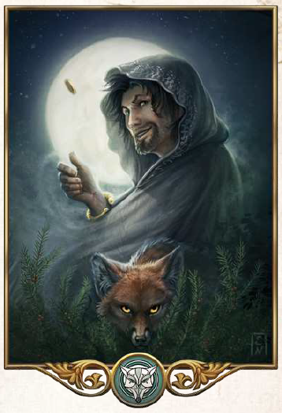

"Erkenne deine Möglichkeiten und nutze sie - Dann wird Phex die seine Gunst erweisen."
Aspekte: Glück, Handel, List, Diebstahl, Eigenverantwortlichkeit
Symbole/Wahrzeichen: Nebel, Nacht, Sterne
Heiliges Tier: Fuchs (in den Tulamidenlanden auch der Mungo oder Fledermaus, insgesamt seltener die Elster)
Der Listenreiche ist der Gott der Händler, Diebe und Geheimnisse. Als Herr der Sterne versetzt besonders verdiente Seelen als funkelnde Kleinode an den Nachthimmel. Phexens Segen wird höufig beim Handel erbeten, bei Glücksspielen und vor riskanten Unternehmungen. In den Tulamidenlanden gilt Phex außerdem als nächtlicher Vollstrcker, als Kämpfer gegen Echsenwesen und als Herr der Magie und "stiehlt" auch darüber hinaus viele weitere Aspekte andere Gottheiten.
In einigen Städten gibt es zwei Phextempel: einen öffentlichen, in dem man Geschäfte tätigen und Abschlüsse besiegel kann und einen verborgenen, in dem sich Diebe, Helher und Heimlichtuer die Klinke in die Hand geben.
Einen getarnten Tempel zu finden oder einen heimlichen Priester zu erkennen, kann eine echte Herausforderung sein, denn im Lügen und Verkleiden haben es viele von ihnen zur Meisterschaft gebracht. Der höchste Tempel des Phex ist ein Mysterium, ebenso die Identität seines höchsten Geweihten, des Mondes.